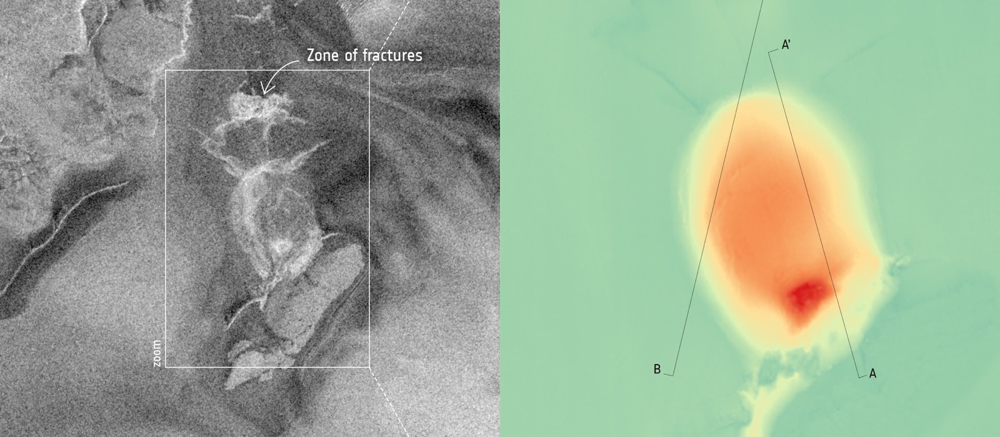

IEEE ICIP 2026 · ESA ClearSAR Grand Challenge · Track 1

A real Copernicus Sentinel-1 C-band SAR scene (Antarctic subglacial-lake outburst), shown as a SAR backdrop.
RFI itself appears as thin, near-full-width horizontal bands (median 10 px × 140 px, ≈8:1); the
amber bands and cyan boxes here are illustrative of the detection task, as the ESA ClearSAR RFI imagery is licence-restricted.
Image: contains modified Copernicus Sentinel data, processed by ESA, CC BY-SA 3.0 IGO.
We present a detection pipeline for Radio-Frequency Interference (RFI) in Sentinel-1 SAR quicklook imagery, reaching 0.4776 mAP50-95 on the held-out test set of the ESA ClearSAR Track 1 challenge (28th of 172 teams). The pipeline combines a YOLO26x base detector with a pixel-space Normalised Wasserstein Distance (NWD) regression loss, pseudo-label distillation from a multi-source ensemble teacher onto the unlabelled test imagery, multi-resolution test-time augmentation fused by Weighted Box Fusion (WBF), and a selective cross-fold ensemble that drops the domain-overlapping fold.
On a leak-isolated meta-validation set the distilled student source gains +0.077 over a cold baseline, but on genuinely unseen data that source is redundant with the ensemble teacher, and the full stack adds only +0.0021 over submitting the teacher alone. We report both; the gap between them is the main result.
Step through the pipeline. Each stage shows what the model does and how the detections on the scene above evolve.
Building the honest student source · leak-isolated meta-validation, animated
On unseen data the entire distillation–TTA–blend stack adds +0.0021 over the teacher (a ~37× smaller gain) and +0.0056 over a plain 5-fold ensemble.
Stepping back: most of this pipeline is a study in diminishing returns. The pseudo-label distillation, multi-resolution TTA, fold-dropping, and blending each add real complexity, but on genuinely unseen data they buy almost nothing. The full stack sits within noise of just submitting a decent ensemble teacher.
And the cost is not free. Every one of these micro-optimizations makes the model harder to reason about, harder to reproduce, and harder to trust, for a gain that wouldn't survive contact with a real deployment, where a single robust ensemble wins on every axis that actually matters. None of this is likely to be used in practice.
So: mediocre numbers, but a genuinely useful lesson in what doesn't transfer, which is the part worth writing down.
@inproceedings{elghoudane2026rfi,
title = {RFI Detection in Sentinel-1 SAR Imagery via Pseudo-Label
Distillation and Multi-Resolution Ensemble},
author = {Elghoudane, Anas},
booktitle = {IEEE International Conference on Image Processing Workshops (ICIPW)},
year = {2026},
note = {ESA ClearSAR Track 1 Grand Challenge}
}